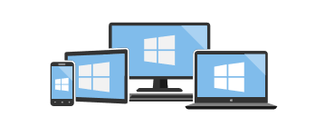

Accessibility in Windows 11 and Windows 10
Build accessibility into your applications to empower people of all abilities
Products and services—including electronic media—are accessible when they are designed to provide full and successful experiences for as many people as possible.
Build accessible and inclusive Windows applications, with improved functionality and usability, for people with disabilities (both temporary and permanent), personal preferences, specific work styles, or situational constraints (such as shared work spaces, driving, cooking, glare, and so on). Some common solutions include providing information in alternative formats (such as captions on a video) or enabling the use of assistive technologies (such as screen readers).
Everyone should have access to the same rooms in a building, whether they need to use the stairs or the elevator.
This page provides information on how the various Windows development frameworks provide accessibility support for developers building Windows applications, assistive technology developers building tools such as screen readers and magnifiers, and software test engineers creating automated scripts for testing applications.
Platform-specific documentation

Universal Windows Platform (UWP)
Develop accessible apps and tools on the modern platform for Windows applications and games on any Windows device (including PCs, phones, Xbox, HoloLens, and more), and publish them to the Microsoft Store.
Win32 platform
Develop accessible apps and tools on the original platform for C/C++ Windows applications.
What's new in Windows accessibility and automation
Developing accessible applications for Windows
Developing accessible UI frameworks for Windows
Developing assistive technology for Windows
Legacy accessibility and automation technology - MSAA to UI Automation

Windows Presentation Foundation (WPF)
Develop accessible apps and tools on the established platform for managed Windows applications with a XAML UI model and the .NET Framework.
UI Automation Providers for Managed Code
UI Automation Clients for Managed Code
Windows Forms (WinForms)
Develop accessible apps and tools for managed Windows applications with a XAML UI model and the .NET Framework.
Creating an Accessible Windows Application
Properties on Windows Forms Controls That Support Accessibility Guidelines
Providing Accessibility Information for Controls on a Windows Form
Web accessibility
Design, build, and test accessible web sites in Microsoft Edge.
Samples
Download and run full Windows samples that demonstrate various accessibility features and functionality.
The new samples browser replacing the MSDN Code Gallery.
MSDN Code Gallery (GitHub archive)
Download samples for Windows, Windows Phone, Microsoft Azure, Office, SharePoint, Silverlight and other products.
Windows classic samples on GitHub
These samples demonstrate the functionality and programming model for Windows and Windows Server.
Universal Windows Platform (UWP) samples on GitHub
These samples demonstrate the API usage patterns for the Universal Windows Platform (UWP) in the Windows Software Development Kit (SDK) for Windows 10 and later.
This app demonstrates the various Xaml controls supported in the Fluent Design System.
Videos
Various videos covering how to build accessible Windows applications to general accessibility concerns and how Microsoft addresses them.
Microsoft's Accessibility API
Introduction to disability and accessibility
One Dev Minute: Developing apps for accessibility
Windows 11 accessibility features empower everyone
Making the mouse pointers easier to see
[!VIDEO 001a0bd5-c137-4a17-b45f-9f4368bf379d]
Other resources
Blogs and news
The latest from the world of Microsoft accessibility.
Community and support
A place where Windows developers and users meet and learn together.